Brakey
당신의 키보드를 점자 키보드로
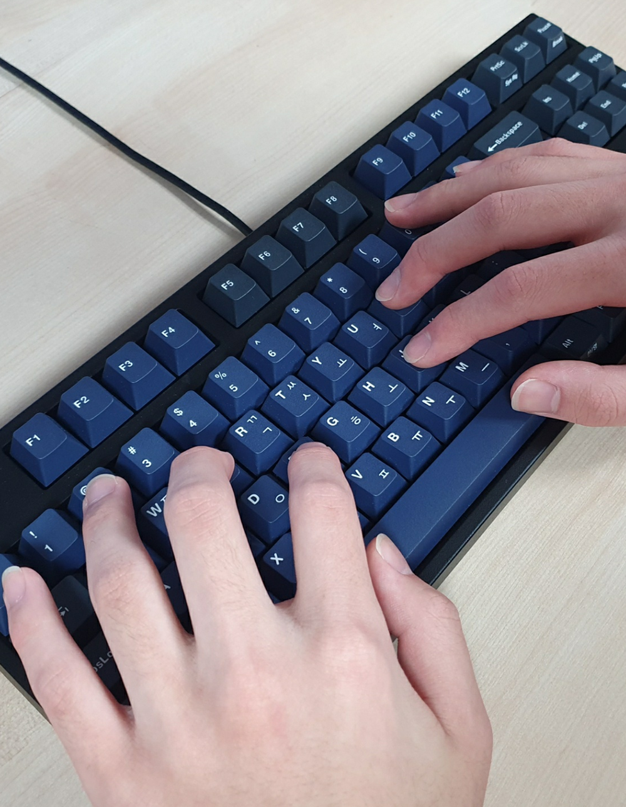
당신의 키보드를 점자 키보드로

하단에 있는 다운로드 버튼을 클릭해 프로그램의 압축파일 (.zip) 을 다운로드 받아줍니다.
다운로드 (dropbox)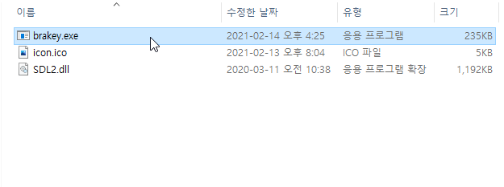
파일의 압축을 해제한 후, brakey.exe 파일을 실행해줍니다.
이 부분은 해당 프로그램을 컴퓨터가 실행될 때 마다 실행되도록 하는 방법입니다.
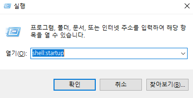
Win + R 키를 눌러준 후 나오는 실행 창에 shell:startup 을 입력해주고 확인 버튼을 눌러줍니다.
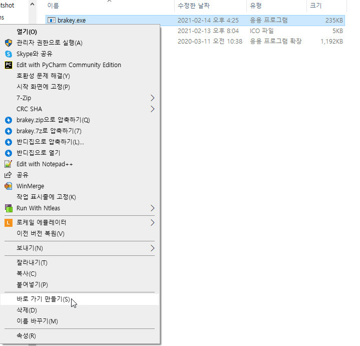
brakey.exe 파일을 오른쪽 마우스 버튼으로 클릭한 후, 바로가기 만들기(S) 를 눌러줍니다.
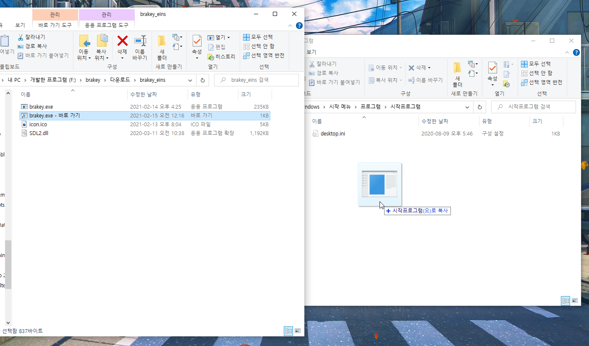
만들어진 바로가기 파일을 아까 shell:startup 을 적었을 때 뜬 창으로 마우스로 드래그 해줍니다.
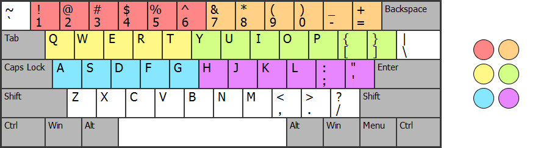
점자의 점과 키보드의 키와의 관계는 위의 사진과 같습니다.
회색과 흰색을 제외한, 동일한 색으로 색칠되어있는 부분은 같은 역할을 하기 때문에
사용자가 원하는 손가락 배치로 사용할 수 있습니다.
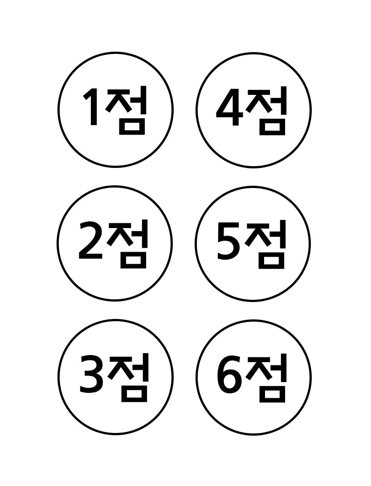
점자의 점들은 왼쪽 위 부터 아래로 내려가며 1, 2, 3점이고, 그 다음 오른쪽 위에서 아래로 내려가며 4, 5, 6점 입니다.
123456 키는 1점
7890-= 키는 2점
QWERT 키는 3점
YUIOP[] 키는 4점
ASDFG 키는 5점
HJKL;' 키는 6점입니다.
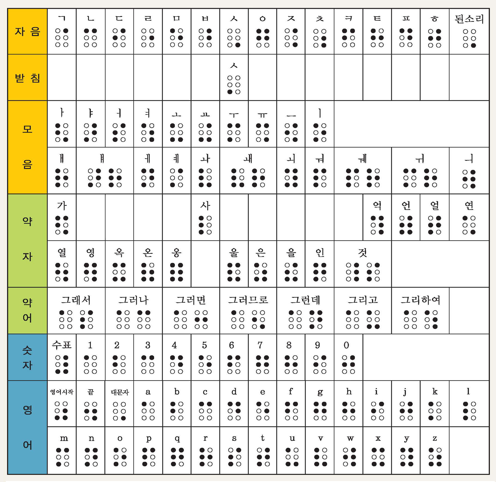
해당 사진은 점자 표 입니다. (출처: 서울특별시립노원시각장애인복지관)
위 표에 있는 점자를 이전 사진에 맞게 눌러주시면 됩니다.
예를 들어, '안' 을 작성하고 싶을 때는.
2키, 0키, E키, I키를 동시에 눌렀다가 때 줍니다. 그러면 ㅇ 이 입력됩니다.
그 후, 2키, E키, J키를 동시에 눌렀다가 때 줍니다. 그러면 ㅏ 가 입력됩니다.
마지막으로, 2키, 0키를 동시에 눌렀다가 때 줍니다. 그러면 ㄴ 이 입력되며
최종적으로 '안' 이라는 글씨가 입력됩니다.
쌍자음을 입력하고 싶은 경우에는, 된소리 점자(⠠) 를 입력합니다.
이후 입력된 자음 하나는 쌍자음이 되어 입력됩니다.
예시) ⠠⠈ = ㄲ
시옷을 받침으로 사용할 때는, 자음점자 ㅅ(⠠)이 아닌, 받침점자 ㅅ(⡀)을 사용해 주세요. (된소리 점자와 곂칩니다.)
테스트 해보기
영어 시작 점자 (⠴) 를 입력하여 영어를 입력할 수 있습니다. 해당 점자를 작성하면 높은 톤의 삐- 소리가 나게 됩니다. 그 후, 영어 점자 표에 맞게 입력하여 영어를 입력할 수 있습니다. 영어 입력을 종료하고 싶은 경우에는 영어 끝 점자 (⠲) 를 입력합니다. 영어 대문자를 입력하고 싶은 경우에는, 대문자 점자 (⠠)를 입력합니다. 이 점자 이후에 오는 영어 한 문자가 대문자가 되어 입력됩니다.
수표(⠼)를 이용하여 숫자를 입력할 수 있습니다. 해당 점자를 입력하면 숫자 모드가 활성화 되며, 숫자 점자를 입력받습니다. 이 후 다시 수표(⠼)를 입력하면 이전 모드로 되돌아갑니다. Caps Lock 키를 이용하여 점자 키보드 모드를 활성화/비활성화 할 수 있습니다. 활성화 되었을때는 높은 톤의 삐- 소리가 나며, 비활성화 되었을때는 낮은 톤의 삐- 소리가 납니다.
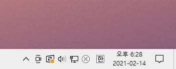
하단 우측의 작업표시줄에서 ^ 모양의 아이콘을 눌러줍니다.
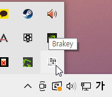
그 후, Brakey 아이콘을 눌러줍니다.
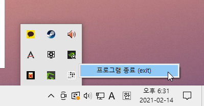
마지막으로, 종료 버튼을 클릭 해주시면 프로그램이 종료됩니다.
버그 및 요청사항은 해당 이메일로 보내주세요 : jiochoi7@gmail.com
트위터 DM으로 보내주시면 빠르게 처리 해드립니다..
후원은 이메일이나 트위터 DM으로 관련해서 보내주시면 계좌라도 보내드리겠습니다...
Hit Counter